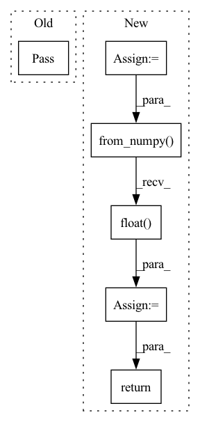

Pattern ID :4194
Before Change
def run_inference(features, encoder):
Get the embedding of an utterance using the encoder.
pass
After Change
def run_inference(features, encoder):
Get the embedding of an utterance using the encoder.
sliding_windows = feature_extraction.extract_sliding_windows(features)
batch_input = torch.from_numpy( np.stack(sliding_windows)).float()
batch_output = encoder(batch_input)[:, -1, :]
aggregated_output = torch.mean(batch_output, dim=0, keepdim=False)
return aggregated_output.data.numpy()
In pattern: SUPERPATTERN
Frequency: 3
Non-data size: 6
Instances Fragment ID: 15400122
Project Name: wq2012/speakerrecognitionfromscratch
Commit Name: ea5616be154877943e14c3ef009b6cf9657c2b5a
Time: 2022-05-08
Author: quanw@google.com
File Name: evaluation.py
M Class Name: AnonimousClass
N Class Name: AnonimousClass
M Method Name: run_inference(2)
N Method Name: run_inference(2)
M Parent Class:
N Parent Class:
M File Name: evaluation.py
N File Name: evaluation.py
M Start Line: 18
M End Line: 18
N Start Line: 19
N End Line: 23
Before Change
return len()
def __getitem__(self,idx):
pass
def eval_train_dataloader(validation_Data = True):
"""
DocumentationAfter Change
def __getitem__(self,idx):
if torch.is_tensor(idx):
idx = idx.tolist()
img = Image.open(self.img_dir+"train"+str(idx)+".jpg")
lables = self.hot_lables[idx]
lables = torch.from_numpy( lables).float()
if self.transform :
img = self.transform(img)
return img,lables
def eval_train_dataloader(validation_Data = True):
""" Fragment ID: 15400127
Project Name: omarsayed7/deep-emotion
Commit Name: ab5fcf161321a840496d751fd2ce4776b1fa5fde
Time: 2020-02-19
Author: sayedomar74@gmail.com
File Name: Deep-Emotion.py
M Class Name: Test_dataset
N Class Name: Test_dataset
M Method Name: __getitem__(2)
N Method Name: __getitem__(2)
M Parent Class: Dataset
N Parent Class: Dataset
M File Name: Deep-Emotion.py
N File Name: Deep-Emotion.py
M Start Line: 71
M End Line: 71
N Start Line: 75
N End Line: 87
Before Change
return len()
def __getitem__(self,idx):
pass
class Test_dataset(Dataset):
def __init__(self,):
"""After Change
def __getitem__(self,idx):
if torch.is_tensor(idx):
idx = idx.tolist()
img = Image.open(img_dir+"train"+str(idx)+".jpg")
lables = self.hot_lables[idx]
lables = torch.from_numpy( lables).float()
if self.transform :
img = self.tarnsform(img)
return img,lables
class Test_dataset(Dataset):
def __init__(self,):
""" Fragment ID: 15400125
Project Name: omarsayed7/deep-emotion
Commit Name: caa30448afb7fedf72cfa8b2da9d07afe3d26987
Time: 2020-02-19
Author: sayedomar74@gmail.com
File Name: Deep-Emotion.py
M Class Name: Train_dataset
N Class Name: Train_dataset
M Method Name: __getitem__(2)
N Method Name: __getitem__(2)
M Parent Class: Dataset
N Parent Class: Dataset
M File Name: Deep-Emotion.py
N File Name: Deep-Emotion.py
M Start Line: 42
M End Line: 42
N Start Line: 46
N End Line: 58